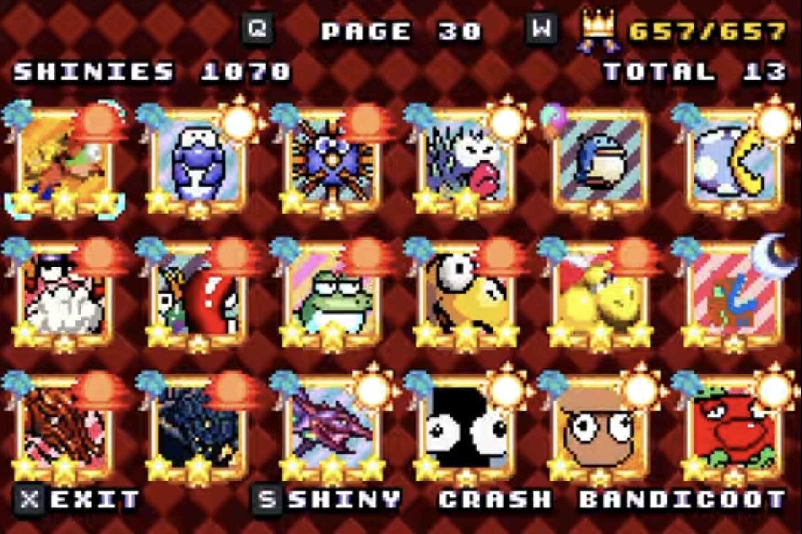

Welcome to Kirby Soft and Wet! In this game, you will help Kirby catch as many fish as he can.

All you have to do is throw the bobber at the right time and you can catch a variety of different fish!

Sometimes, you might not catch a fish at all! You might catch a squid, a shoe, or maybe even a reference from other Nintendo games!

Can you collect all the fish and help Kirby complete his catalog? Play Kirby Soft and Wet Now!

Kirby
First Appearance: Kirby's Dream Land (1992)
Kirby is the hero of this game as well as all other of his adventures in the past.
With the ability to float in the air and copy the powers of anyone he inhales, he is unstoppable!
He is one of the characters you can play as to catch both fish and references!

Waddle Dee
First Appearance: Kirby's Dream Land (1992)
Waddle Dees, depending on which one, can be either Kirby's greatest ally or his most common enemy.
Making his first appearance in Kirby's Dream Land, he is one of the most common characters in the Kirby franchise.
There is one special spear-wielding Waddle Dee that reformed in Kirby's Return to Dream Land, and has been one of Kirby's closest friends ever since.
Who knows? Maybe this particular Waddle Dee is that spear-wielding friend, he is just wielding a fishing pole this time!